Cirugía y castración
Castración de perras y gatas, extirpación de tumores y cirugías de urgencia como la piometra, con cuidado antes y después de operar.
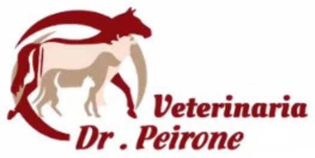
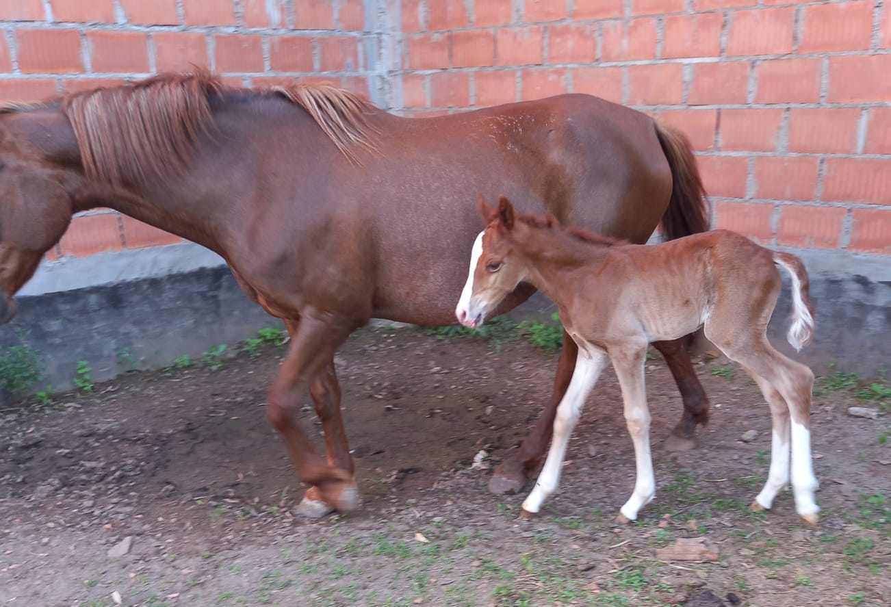
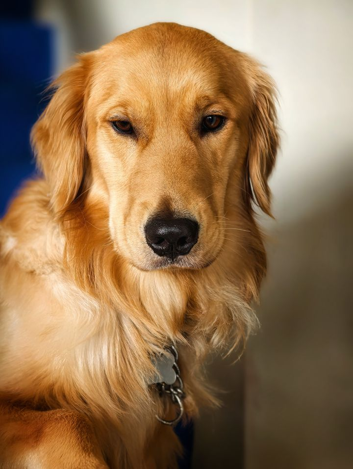
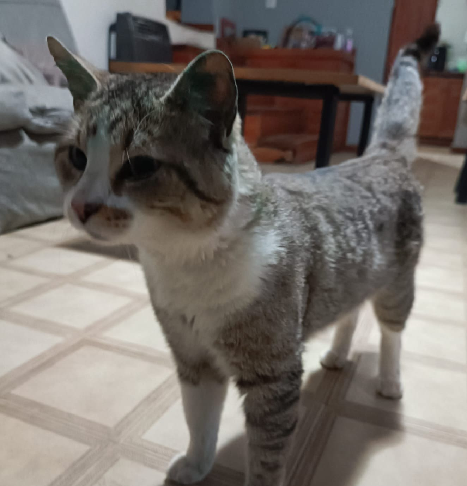
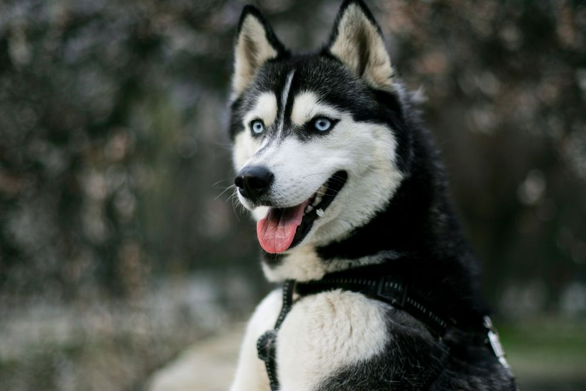
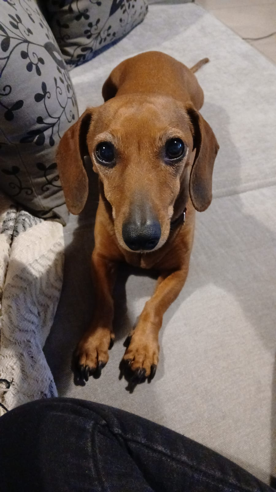
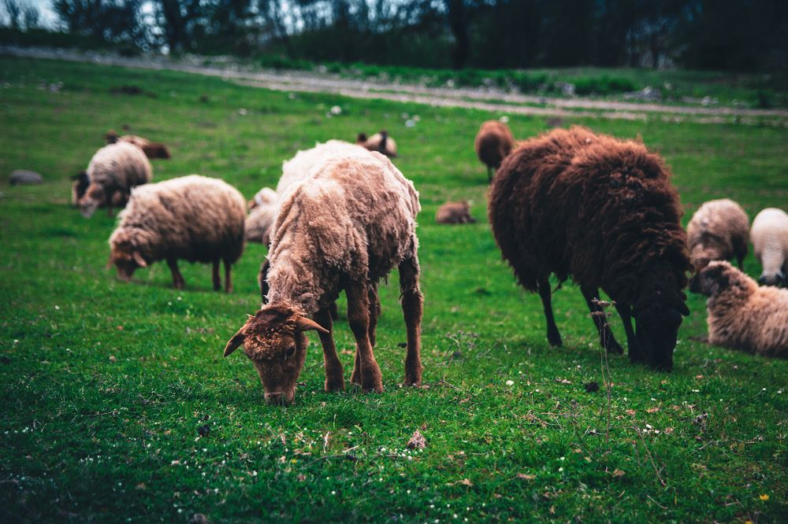
Somos una veterinaria de General Deheza dedicada al cuidado de perros, gatos y animales de campo, como caballos, cerdos y ovejas. Hacemos consultas, cirugías, ecografías, vacunación y desparasitación, y tenemos alimentos balanceados y productos para tu mascota.
Te atiende el Dr. Maximiliano Peirone, médico veterinario (M.P. 5122). En Instagram compartimos casos reales de nuestros pacientes y consejos para cuidarlos.
Ya sea una castración, una vacuna, un estudio o la consulta por un caballo, un cerdo o una oveja, te atendemos con dedicación y te explicamos cada paso.
Consultar por un servicioCastración de perras y gatas, extirpación de tumores y cirugías de urgencia como la piometra, con cuidado antes y después de operar.
Estudios para ver qué le pasa a tu mascota y decidir el mejor tratamiento a tiempo, antes de que el cuadro se agrave.
Plan de vacunas y antiparasitarios para prevenir enfermedades graves, como el parvovirus, y evitar gastos mayores más adelante.
Atención para caballos, cerdos, ovejas y otros animales de campo, y productos veterinarios para equinos, como los aminoácidos. Consultanos por tu caso.
Algunos de los pacientes que atendimos y cómo evolucionaron con el tratamiento.
El meconio son las primeras heces del potrillo. Cuando se retiene, provoca dolor abdominal, es decir, cólico.
Con el tratamiento adecuado, mostró una recuperación satisfactoria.
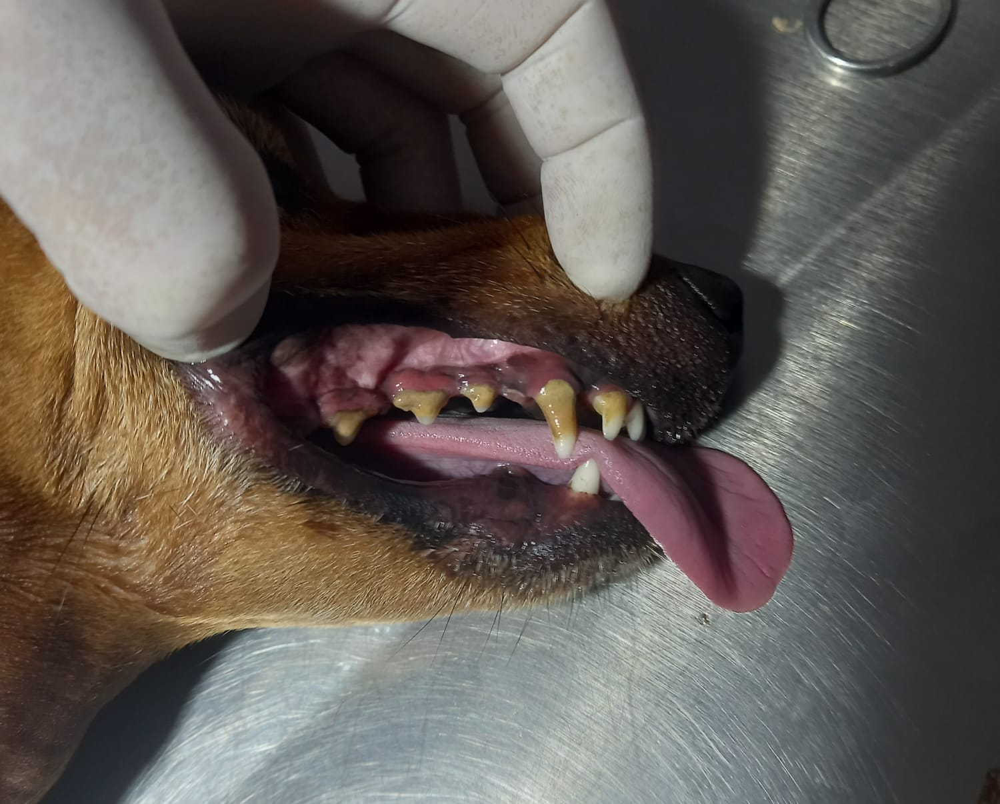
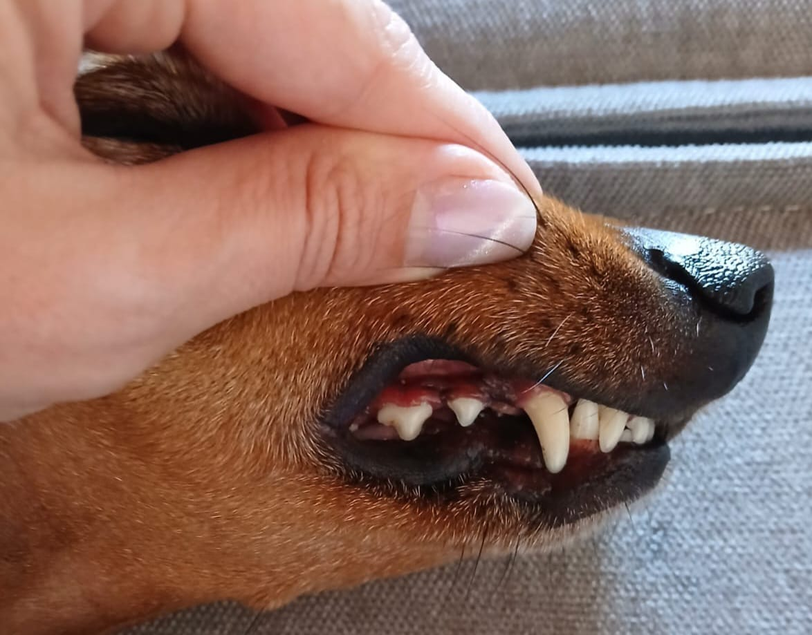
Se realizó una limpieza de dientes para retirar el sarro y cuidar las encías.
Dientes limpios después del procedimiento.
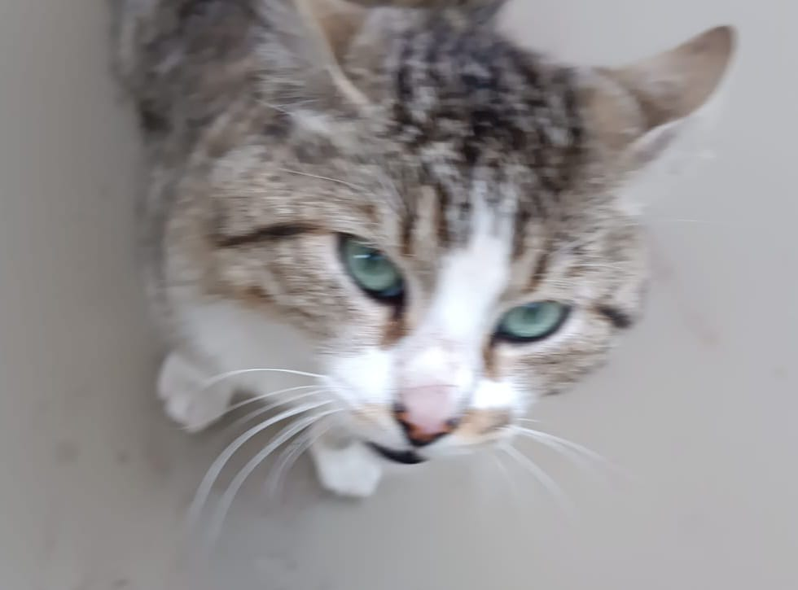
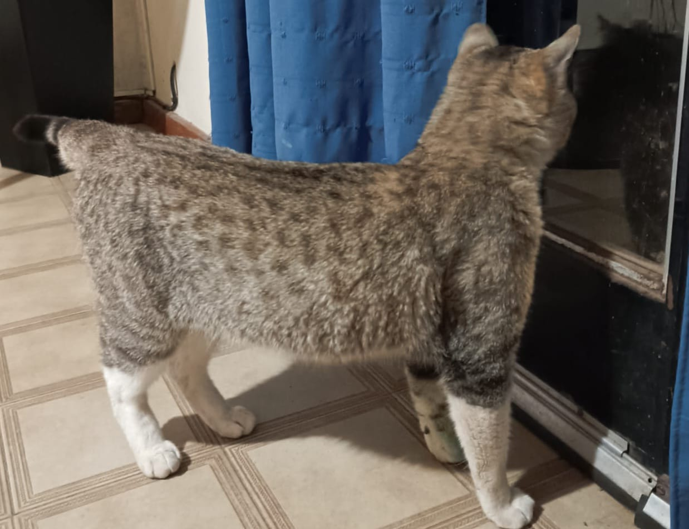
La orquiectomía es la cirugía de castración del paciente. Las fotos fueron tomadas el día después de la operación.
Una recuperación extraordinaria.
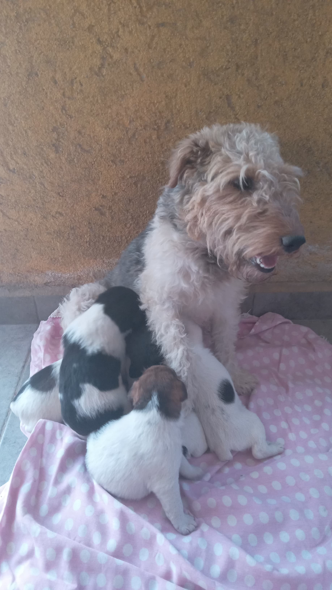
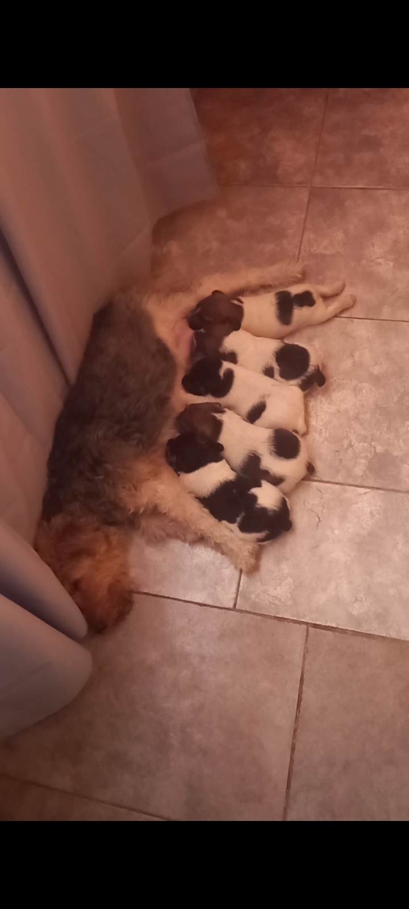
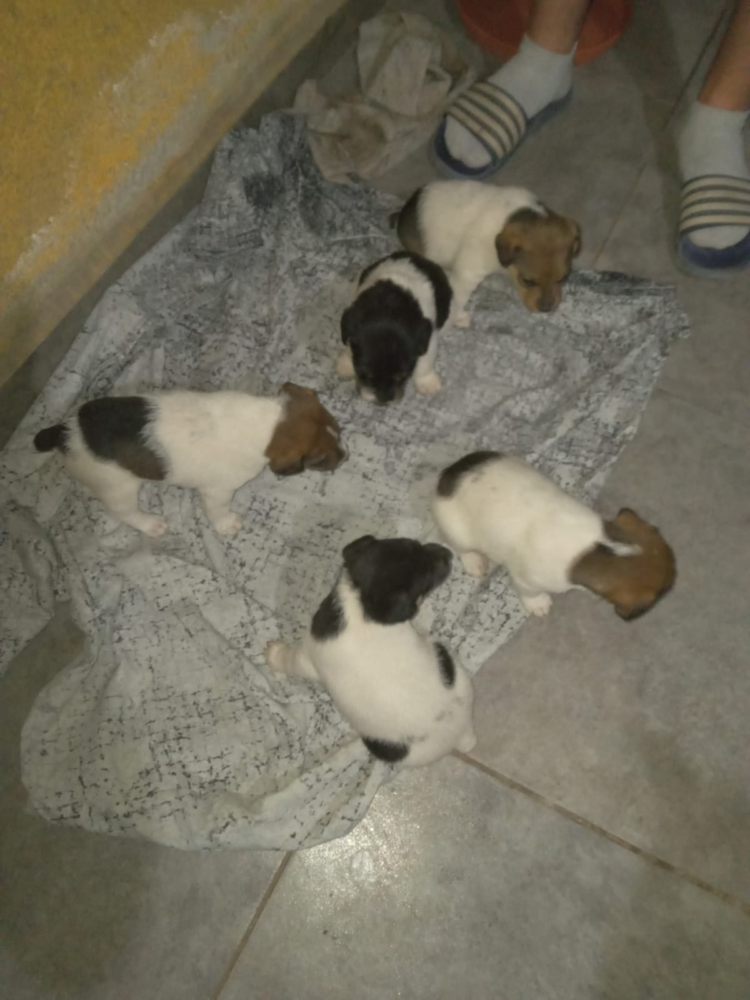
A los 24 días del parto llegó de urgencia a la clínica con bradicardia, hipertermia, espasticidad en los miembros e hiperventilación: signos compatibles con hipocalcemia.
Se le administró suero glucosado con gluconato de calcio y un miorrelajante.
El tratamiento fue todo un éxito.
Casos reales de la clínica, tal como los compartimos en Instagram. Vacunar y desparasitar a tiempo evita cuadros graves.
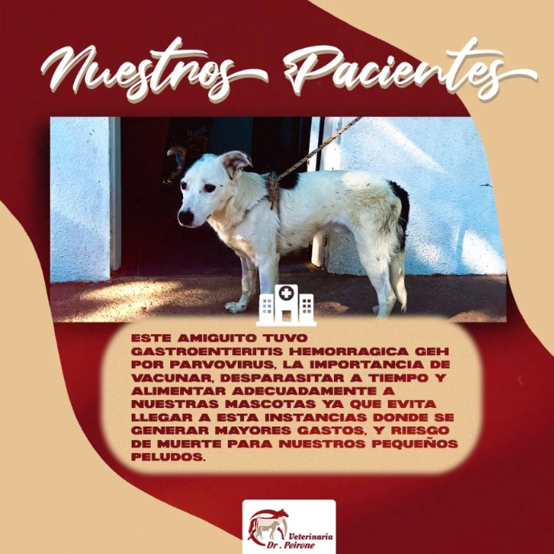
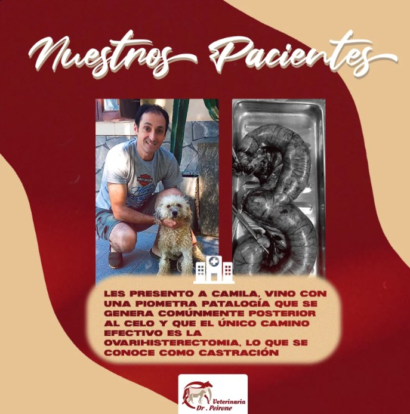
Balanceados, antiparasitarios y suplementos para perros, gatos y caballos. Tocá un producto para consultarnos por WhatsApp.